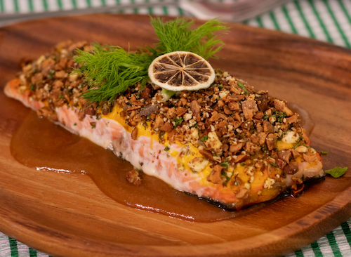

Salmon with Lemon and Herbs

Description
This lemon-herb baked salmon is a simple yet elegant dish that's perfect for a healthy weeknight dinner
or a special occasion. The salmon fillets are lightly seasoned, drizzled with olive oil, and baked
alongside fresh lemon slices and fragrant herbs like dill and parsley, creating a fresh and vibrant
flavor.
Rich in omega-3 fatty acids, protein, and essential nutrients, this recipe not only tastes delicious but
also supports heart health and overall well-being. Serve it with roasted vegetables, a crisp salad, or
steamed rice for a complete, balanced meal that's both nutritious and visually appealing.
Ingredients (2 servings)
- 2 salmon fillet
- 1 lemon (sliced)
- 2-3 springs of fresh dill or parsley
- 1-2 tablespoon olive oil
- 1-2 garlic cloves (minced)
- Salt and freshly ground black pepper
Steps
- Preheat your oven to 200°C (400°F).
- Line a baking sheet with parchment paper or lightly grease it with olive oil.
- Place the salmon fillet on the baking sheet, skin-side down if it has skin.
- Drizzle the olive oil over the salmon and season with salt and black pepper.
- Sprinkle the chopped dill and parsley evenly on top of the fillet.
- Arrange the lemon slices over the salmon.
- Bake in the preheated oven for 12-15 minutes, or until the salmon is cooked through and flakes
easily
with a
fork.
- Remove from the oven and let it rest for 1-2 minutes before serving.
- Serve with your choice of sides, such as roasted vegetables, salad, or rice.